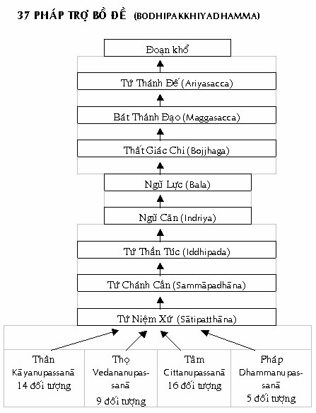

|
Minh Sát Tu Tập ACHAAN NAEB MAHANIRANONDA Tỳ kheo PHÁP THÔNG dịch
PHẦN I LÝ THUYẾT "Tất
cả loài hữu tình "... Mặc dù với tâm tín thành, vị ấy quy y Ðức Phật, Giáo Pháp và Chư Tăng, nhưng quả báo chắc chắn sẽ lớn hơn nếu vị ấy với tâm tín thành thọ trì các học giới: từ bỏ sát sanh,..., từ bỏ uống rượu và các chất say -- là nhân sanh dễ duôi...; mặc dù với tâm tín thành, vị ấy thọ trì các học giới này, nhưng quả báo chắc chắn sẽ lớn hơn nếu vị ấy tu tập từ tâm chỉ như thoáng hương bay...; mặc dù vị ấy tu tập từ tâm chỉ như thoáng hương như vậy, nhưng quả báo chắc chắn sẽ lớn hơn nếu vị ấy tu tập vô thường tưởng, chỉ trong một búng tay..." (AN IV) --ooOoo-- I. ÐẠO PHẬT Hai ngàn sáu trăm năm trước, Thái tử Sĩ-đạt-ta (Siddhatta) của Vương Tộc Thích Ca nhỏ bé ở Bắc Ấn bàng hoàng trước nỗi thống khổ mà Người thấy chung quanh mình, đã lìa bỏ vợ đẹp con thơ và đơn độc ra đi tìm phương dứt khổ. Theo chân của các du sĩ Ấn giáo thuở ấy, Ngài đi tìm sự Bất Tử -- Amata. Thực hành với một vị thầy, Ngài đạt đến đệ thất thiền -- tức Vô Sở Hữu Xứ Thiền Vô Sắc [1]. Rồi với một vị thầy khác, Ngài đạt đến đệ bát thiền -- Phi Tưởng Phi Phi Tưởng Xứ. Tuy nhiên, chẳng bao lâu, Ngài nhận ra rằng đây chỉ là những trạng thái nhất thời chứ không thực sự đoạn tận khổ. Từ đó, Ngài bắt đầu hành pháp khổ hạnh, kể cả nhịn ăn để tịnh hóa thân tâm, nhờ đó hy vọng thành tựu sự giải thoát khổ. Ngài hành pháp khổ hạnh cho đến khi cơ thể gần như sức tàn lực kiệt. Sau đó, Ngài từ bỏ khổ hạnh, mở đầu bằng việc thọ dụng bữa cơm sữa do một mục nữ tên Sujata dâng cúng. Ngài nhận ra rằng, hai cực đoan lợi dưỡng và khổ hạnh đều không phải là câu trả lời; câu trả lời nằm trong Trung Ðạo (Majjhimā Patipada). Ðêm đó, trong khi hành thiền định, Ngài khám phá chân lý Tứ Ðế và trở thành bậc Giác Ngộ. Ngài là bậc Chánh Ðẳng Giác (Sammāsambuddhassa) - Bậc tự mình giác ngộ). Ngày nay, khắp mọi nơi trên thế giới, con người - dù được hưởng những chuẩn mực sinh hoạt và sự sung túc ngày càng tăng cao, song họ vẫn không cảm thấy thỏa mãn. Ðức Phật Gautama (Cồ Ðàm) trước sau như một, trong suốt bốn mươi lăm năm giáo hóa, chỉ dạy một điều: "Khổ và sự đoạn tận khổ". Ngài không quan tâm đến vấn đề suy đoán xem thế gian này là trường tồn hay không trường tồn, hoặc những vấn đề khó hiểu tương tự từng làm bận lòng các triết gia - mặc dù Ngài khẳng định vũ trụ là một vật thể, bao gồm các pháp hữu vi là Danh và Sắc (nāma và rūpa, hay ngũ uẩn). Không thể thấy một tự ngã hay linh hồn thường hằng nào trong đó, dù là chư thiên hay loài người. Thực vậy, sự thực hành trong đạo Phật có thể được hiểu như là sự quán sát (tỉnh thức) về các hiện tượng của thân và tâm, như những pháp luôn luôn thay đổi. Kết quả của hơn hai ngàn năm quán sát tiến trình thân và tâm này, một kho tàng những thông tin đã được khai mở. (Ngay cả những khám phá gần đây trong việc nghiên cứu những giấc mơ đang tiến hành ở phương Tây, cũng đã được người Phật tử biết đến hàng ngàn năm trước). 1. Giới thiệu Ðạo Phật Phật giáo đúng nghĩa không phải là những ngôi chùa, những pho tượng Phật, những hình thức bố thí, hay những lễ nghi, v.v... Mặc dù những điều vừa kể rất có giá trị, song chúng không đáp ứng được câu hỏi Phật giáo thực sự là gì. Nếu chúng ta nói rằng, đạo Phật thực sự là việc hành thiền, sử dụng chánh niệm và tỉnh giác để chứng đắc trí tuệ -- nhờ vậy, tẩy trừ mọi phiền não và đoạn tận khổ đau -- thì chúng ta đang đến gần câu trả lời. Tuy nhiên, chúng ta vẫn chưa đạt đến chỗ thấu đáo. Nếu chúng ta nói rằng, đạo Phật thực sự là Danh (nāma) và Sắc (rūpa), như thế chúng ta đã đến gần hơn chút nữa, song ngay cả điều này vẫn chưa hoàn toàn thỏa mãn. Từ "nāma" (danh) truyền đạt ý niệm về một cái tâm thuần khối, thực hiện tất cả mọi nhiệm vụ tâm lý khác nhau. Ðể đưa ra một bức tranh chân xác hơn về tâm, nāma phải được diễn tả như những citta [2] - tâm, mỗi tâm khởi lên riêng biệt, và tâm này khác với tâm kia. Chẳng hạn, tâm thấy không giống tâm nghe, phóng tâm khác với tâm quán sát sắc trong lúc thực hành, v.v... "Chúng ta", toàn bộ sự hiện khởi của "chúng ta", ở bất kỳ một thời điểm nào cũng chỉ là sự khởi lên của một trong những tâm này; chúng thay thế nhau rất nhanh lẹ. Nhưng nói tâm không vẫn chưa đủ. Tâm thực sự được cấu tạo bởi 52 tâm sở -- cetasika -- khác nhau (chẳng hạn, xúc, thọ, tưởng,... là những tâm sở). Vì vậy bây giờ, sự định nghĩa đúng đắn của chúng ta về nāma (danh) trở thành citta - cetasika (tâm - tâm sở). Ðến đây, chúng ta thêm sắc (rūpa) vào phần định nghĩa đó và có citta - cetasika và rūpa (tâm - tâm sở và sắc). Tuy nhiên, đó vẫn không phải là "bức tranh" toàn diện. Nếu chúng ta thực hành đúng đắn (nhận biết Danh-Sắc này không phải là "chúng ta"), kết quả là ta sẽ đạt đến trạng thái mà ở đó, một sát-na tâm đạo ngắn ngủi khởi lên làm nhiệm vụ đoạn trừ phiền não. Sát-na tâm đạo này có Niết Bàn làm đối tượng, và Niết Bàn này cũng là một phần của thực tại trong Phật giáo. Như vậy, định nghĩa cuối cùng của chúng ta về thực tại Phật giáo bây giờ trở thành Danh-Sắc và sự giác ngộ, hoặc nói theo ngôn ngữ Pāḷi -- ngôn ngữ thường dùng trong đạo Phật -- là Citta, Cetasika, Rūpa và Nibbāna. Trong đạo Phật, bốn Pháp này là thực tại tối hậu (chân đế). Ðiều này hàm ý chúng là những Pháp nằm trong vũ trụ được xem là "thực", với nghĩa: chúng không đòi hỏi phải có những khái niệm để hiểu nó. Do đó, các pháp hữu vi trong vũ trụ này được cấu tạo bởi ba thực tại đầu -- tâm, tâm sở, sắc. Niết Bàn -- đối tượng của sát-na tâm đạo đoạn trừ phiền não ở mỗi trong bốn giai đoạn giác ngộ -- là phần thứ tư của thực tại tuyệt đối kể trên. (Ðiều quan trọng nên biết ở đây là Niết Bàn chỉ là đối tượng của tâm ở một giai đoạn tuệ nào đó mà thôi. Niết Bàn thực sự xuất hiện như một sát-na tĩnh lạc ngắn ngủi, bản chất của Niết Bàn không phải là phiền não). Trong đạo Phật, thấu hiểu ba thực tại đầu (tâm, tâm sở, sắc) là để chứng minh cái gọi là "Ta" này thực ra được cấu tạo bởi nhiều phần (các trạng thái tâm lý (danh) hay vật chất (sắc) đều thay đổi hay biến đi một cách nhanh chóng). Vì vậy, không có phần nào trong những phần này là "Ta", và tập hợp các phần ấy cũng không phải là "Ta". Vi Diệu Pháp (Abhidhamma) -- môn khoa học lấy đối tượng là thực tại tuyệt đối -- giúp chúng ta thấy rõ cơ cấu vi tế của cái gọi là Thân - Tâm hay Danh-Sắc này, rằng "chúng ta" không phải là đàn ông, không phải là đàn bà, không có tự ngã, v.v... Do đó, định nghĩa đầu tiên của chúng ta về đạo Phật lúc này chính là Thực Tại Cùng Tột gồm Tâm (Citta), Tâm sở (Cetasika), Sắc pháp (Rūpa) và Niết Bàn (Nibbāna) -- đây là đạo Phật chân thực. Sự định nghĩa này đúng cho tất cả các pháp thuộc thế gian -- sự kết hợp Danh-Sắc (citta -- cetasika -- rūpa) tạo ra pháp hữu tình và pháp vô tình thì chỉ có sắc (rūpa); và pháp xuất thế gian -- Niết Bàn (Nibbāna). Dù ai không biết về định nghĩa này, cũng như chưa từng nghe nói về đạo Phật, họ vẫn là tâm - tâm sở - sắc pháp, và Niết Bàn vẫn hiện hữu như một trạng thái mà tâm có thể đạt đến khi đã tuyệt đối thanh tịnh. Như vậy, sau khi đã đọc lời giải thích giản dị này về Ðạo Phật Chân Thực, bạn có thể, đây là điều chúng tôi hy vọng, có ít nhiều tín tâm nơi Phần Bàn Luận hơi nặng tính "kỹ thuật" của bậc Thầy chúng tôi về đề tài quan trọng này. Nó sẽ được mô tả kỹ trong những đoạn sau. 2. Phần Bàn Luận Ðạo Phật có thể được định nghĩa như là Thực tánh pháp và những lời dạy của Ðức Phật. 1) Thực Tánh Pháp Ðức Phật dạy "Sabba dhamma anatta" -- tất cả các pháp (dhamma) đều vô ngã (anatta). Như vậy, chúng ta thấy rằng bốn yếu tố của thực tại cùng tột trong vũ trụ -- tâm (citta), tâm sở (cetasika), sắc (rūpa), sự giác ngộ (Nibbāna) -- đều có cùng một đặc tính là vô ngã. Bốn yếu tố này là thực tánh pháp (sabhāva dhamma), nghĩa là, không có tự ngã, không có đàn ông, không có đàn bà, không chó, mèo v.v... Vô ngã là một trong ba đặc tánh (Tam tướng) -- Vô Thường, Khổ, Vô Ngã -- được xem là hợp với bốn yếu tố của thực tại cùng tột. Niết Bàn thuộc siêu thế chỉ vô ngã; ba yếu tố còn lại thuộc hiệp thế có đầy đủ ba đặc tánh (Tam tướng) kể trên. a) Chúng hữu tình là tập hợp gồm ba trong bốn pháp kể trên, tức mỗi người chúng ta là tập hợp của tâm, tâm sở và sắc pháp; hay nói gọn là thân và tâm hoặc danh và sắc. Chi tiết hơn, chúng có thể được phân thành năm phần gọi là ngũ uẩn gồm: sắc, thọ, tưởng, hành, và thức uẩn. Các yếu tố này cứ tiếp tục đưa chúng ta vào vòng luân hồi, tức là vòng luẩn quẩn của sanh, lão, bệnh, tử. Chúng phát sanh do nhân và duyên; chúng luôn luôn tùy thuộc vào nhau (sắc "thân" không thể hoạt động nếu không có tâm; tâm cũng không nơi nương tựa nếu không có thân); chúng sanh diệt tức thời và liên tục trong suốt kiếp sống. Sự sanh diệt này xảy ra trong từng sát-na, và chính vì nó cứ xảy ra một cách "tự do" cho dù chúng ta có biết hay không, nên nó được gọi là pháp thế gian; nó xảy ra không do Thượng Ðế, Phạm Thiên hay bất kỳ một sự can thiệp huyễn hoặc nào. Năm uẩn hay Danh-Sắc (nāma-rūpa) là Khổ đế -- Dukkhasacca ("Sacca" có nghĩa là "sự thực" hay "chân đế". "Dukkhasacca" là sự thực về Khổ hay Khổ đế -- Thánh đế thứ nhất). Năm uẩn là khổ và chúng là quả của nhân -- nhân đó chính là tham ái, như đã được Ðức Phật tuyên bố trong Thánh đế thứ hai -- Khổ Tập Thánh đế hay sự thực về nhân sanh khổ. Nhân sanh thực sự của Danh và Sắc là phiền não. Phiền não này là ái, hay trong pháp hành, các phiền não là Tham, Sân, Si. Chính do phiền não mà danh và sắc được tạo ra. Thân - tâm hay danh - sắc (năm uẩn) là những gì chúng ta thường nghĩ là đàn ông hay đàn bà, quốc gia này, quốc gia nọ, v.v... Nhân sanh (phiền não) và quả được sanh (năm uẩn) đều có ba đặc tánh -- Vô Thường, Khổ và Vô Ngã -- đây là quy luật tự nhiên, không có sự ngoại lệ cho bất kỳ chúng sanh nào. b) Niết Bàn là thực tại cùng tột (sabhāvadhamma) và nằm ngoài năm uẩn, hay nói cách khác là nằm ngoài "thế gian". (Ðức Phật nói rằng, đối với mỗi chúng sanh, "thế gian" thực sự là Năm Uẩn, bởi lẽ mọi thứ chúng ta kinh nghiệm đều phát ra từ đó. "Thế gian" này có thể được gọi là "thế gian của năm uẩn" hay "thế gian của danh - sắc"). Niết Bàn là đối tượng của sát-na tâm đạo diệt trừ phiền não, cũng chính là diệt khổ. Sự kiện này xảy ra ở Tuệ thứ 14 trong 16 Tuệ Minh Sát (Vipassanāñāṇa) và sát-na tâm quả liền sau nó (Tuệ thứ 15). Niết Bàn được gọi là siêu thế bởi vì đó là pháp triệt tiêu phiền não và khổ. Niết Bàn chỉ có vô ngã. Ðây là đạo Phật chân thực mà chính Thái tử Sĩ-đạt-ta đã tự mình khám phá bằng trí tuệ, không ai dạy cho Ngài cả. Vì thế, Ngài được gọi là "Phra Arahant -- Sammasambuddha" (Bậc A-la-hán Chánh Ðẳng Giác). 2) Những lời dạy của Ðức Phật Những lời dạy của Ðức Phật cũng được xem như là định nghĩa về đạo Phật. Những lời dạy đó đem lại nhiều lợi ích trong kiếp hiện tại, trong kiếp vị lai, đem lại lợi ích tối thượng hay Niết Bàn đoạn tận khổ - tùy thuộc vào khả năng đoạn trừ phiền não (Tham, Sân, Si) của mỗi người. Trong Tam tạng Kinh điển, Ðức Phật đã chỉ ra rất nhiều pháp hành từ thấp đến cao, từ cạn đến sâu, phù hợp với căn tánh của mỗi chúng sanh, và chỉ với mục đích là đoạn trừ tham, sân, si. Bố thí, giữ giới, hành thiền, v.v... tất cả đều góp phần đem lại những lợi ích kể trên. Trong chuyên luận này, chúng ta sẽ chỉ bàn đến Niết Bàn là pháp đoạn tận khổ. Cái khổ thực sự chính là năm uẩn, hay thân và tâm (danh và sắc). Khi năm uẩn tận diệt hoàn toàn thì Niết Bàn được đạt đến. Một ví dụ chứng minh cho sự kiện này là Ðức Phật và các bậc Thánh đệ tử của Ngài -- họ không bao giờ còn tái sanh để thọ khổ nữa. Ðức Phật đã dạy phương cách nào để chấm dứt khổ? Ngài dạy Giới, Ðịnh, Tuệ trong Bát Thánh Ðạo. Tại sao phải là Giới, Ðịnh, Tuệ trong Bát Thánh Ðạo? Bởi vì ba yếu tố này khi nằm trong Bát Thánh Ðạo trở thành Trung Ðạo, một yếu tố tối cần để chứng đắc Tứ Thánh Ðế. Bát Thánh Ðạo được gọi là Trung Ðạo, là "Con Ðường Ðộc Nhất" để chứng đắc Tứ Thánh Ðế, cũng như đoạn tận khổ. Trung Ðạo nghĩa là tránh hai cực đoan -- lợi dưỡng và khổ hạnh -- mà Ðức Phật đã thấy rõ sau khi hành với các đạo sĩ Ấn giáo vào thời của Ngài. Những vị đạo sĩ này nghĩ rằng hành khổ hạnh sẽ diệt được tham ái và lợi dưỡng sẽ diệt được sân hận, nhưng không phải vậy. Trung Ðạo cũng có nghĩa là không thiên về tham hay sân. Kết quả sự chứng ngộ Tứ Thánh Ðế là gì? Kết quả đó là đoạn tận khổ. Sự kiện này xảy ra khi sát-na tâm đạo có Niết Bàn là đối tượng -- diệt trừ tất cả các phiền não còn lại và đoạn tận khổ (Ðạo thứ tư -- A-la-hán Ðạo). Niết Bàn là cực lạc bởi lẽ nó không còn tái sanh. Cực lạc đề cập ở đây với nghĩa gì? Cực lạc ở đây muốn nói đến loại hạnh phúc không còn chuyển thành khổ như trong tam giới nữa. Ðức Phật nói "Niết Bàn lạc tối thượng". Tại sao Ðức Phật lại nói như vậy? Bởi vì Niết Bàn không có năm uẩn -- năm uẩn chính là Khổ Ðế. Nếu không có năm uẩn, thì không có các khổ như già, đau, bệnh, chết, sầu, bi, v.v... Ðó là lý do tại sao Niết Bàn được gọi là lạc, nó không giống như hạnh phúc thế gian, thực chất chỉ là khổ. Niết Bàn là tối thượng trong đạo Phật. Giới, Ðịnh và Tuệ hình thành Bát Thánh Ðạo. Cái nào đi trước? Chúng ta có phải hành giới trước cho đến khi được thanh tịnh giới rồi mới hành định và tuệ không? Giới, Ðịnh và Tuệ trong Bát Thánh Ðạo cần phải phối hợp với nhau chứ không tách riêng ra, giống như một liều thuốc có ba viên, chúng ta phải uống hết một lần. Thiền định đem lại lạc cùng với hỷ, đặc biệt đối với những người đã đạt đến an chỉ định (một trạng thái định rất cao). Nhưng nó vẫn chưa phải là an lạc tối thượng. Mặc dù là thiện và nó diệt được các triền cái (những phiền não trong tâm), nhưng các trạng thái an lạc này chỉ là tạm thời, chỉ kéo dài bao lâu các triền cái còn bị trấn áp. Do đó, hạnh phúc của thiền định còn tùy thuộc vào mức độ định tâm. Và hạnh phúc ấy vẫn còn nằm trong vòng luân hồi. Loại thiền để đạt đến an chỉ định này có trước thời Ðức Phật. Chính Ðức Phật cũng đã hành pháp thiền định này và đạt đến bậc cao nhất -- Ðệ bát định hay Phi tưởng phi phi tưởng xứ định. Nhưng Ngài nhận ra rằng định không thể diệt được những phiền não ngủ ngầm trong tâm. Sau đó, Ngài khám phá ra Bát Thánh Ðạo -- pháp hành theo Trung đạo -- và chứng ngộ Tứ Thánh Ðế. Sự kiện này được gọi là Giác Ngộ. Từ sự giác ngộ này, Ngài tuyên bố, "Ðây là kiếp chót của ta". Như vậy, do sự giác ngộ (Niết Bàn), phiền não và khổ được tận diệt, chấm dứt vòng sanh tử luân hồi, nên Niết Bàn chính là sự an lạc hay hạnh phúc tuyệt đối. Trong tất cả mọi hệ thống triết lý của thế gian, trí tuệ đoạn tận khổ chỉ được tìm thấy ở đạo Phật. Làm thế nào chúng ta có thể chứng minh điều này? Bát Thánh Ðạo, nếu được thực hành một cách chánh đáng, sẽ tiêu diệt tất cả phiền não được xem là Nhân sanh khổ. Các phiền não này chỉ có thể bị đoạn diệt bằng trí tuệ. Khi pháp hành thành mãn, trí tuệ sẽ phát triển, trí tuệ minh sát này sẽ đoạn diệt phiền não. Nói cách khác, việc thực hành Bát Thánh Ðạo sẽ mang lại kết quả này. Những câu hỏi cuối cùng có liên quan đến Niết Bàn là: (a) Gì là Niết Bàn? (b) Niết Bàn ở đâu? (c) Làm thế nào để thấy Niết Bàn? (Ðó là nếu ta tin Niết Bàn thực hiện hữu). Ðây là những câu hỏi chính đáng cần được hỏi, bởi vì mọi người đều muốn chấm dứt khổ, tức là phải chứng đắc Niết Bàn - theo Phật giáo. Ở đây, chúng tôi sẽ trả lời một cách vắn tắt, tuy nhiên, khi bạn thực hành thành công, bạn sẽ hiểu rõ hơn. a) Gì là Niết Bàn? Niết Bàn là thực tại tối hậu, hay thực tánh pháp (sabhāva). Niết Bàn là đối tượng của sát-na tâm đạo ngắn ngủi, tiêu diệt phiền não và chấm dứt khổ. Khổ chính là "chúng ta" -- một tập hợp gồm Năm Uẩn -- hay rút gọn lại là Danh-Sắc. Khổ Ðế thực sự hiện hữu, nhưng thường thì chúng ta không thấy được điều ấy, vì vậy mà "chúng ta" phải tồn tại trong thời gian vô cùng tận (luân hồi) -- trừ phi thấy rõ nó (giác ngộ) và chấm dứt nó (giải thoát). b) Niết Bàn ở đâu? Niết Bàn không phải là một cõi, nên Niết Bàn không ở đâu cả. Không một ai, dù người ấy có quyền năng siêu nhiên cũng không thể nói được Niết Bàn ở đâu. Niết Bàn không phải ở trên trời. Niết Bàn cũng giống như gió (nếu có thể so sánh), bạn chỉ biết có gió nhờ tác dụng mát mẻ của nó. Niết Bàn là đối tượng của sát-na tâm rất đặc biệt, khi hành giả hành thiền minh sát và trí tuệ phát sanh, tâm vị ấy lúc này trở nên thanh tịnh. Ðây gọi là sát-na đạo và quả của đạo. Hai sát-na này đều có Niết Bàn là đối tượng (tức là vào giai đoạn Tuệ thứ 14 và 15 trong 16 Tuệ minh sát). Niết Bàn không phải là tâm mà là đối tượng của tâm. Khi tuệ minh sát mạnh, tâm của phàm nhân chuyển thành tâm bậc Thánh. Sự chuyển hóa này được gọi là sát-na đạo. Theo liền sau nó là sát-na quả. Cả hai đều lấy Niết Bàn làm đối tượng. Khi nhân sanh khổ bị diệt thì khổ (quả) cũng bị diệt bởi sát-na đạo đặc biệt của đạo ấy (tức một trong bốn đạo: Tu-đà-hoàn đạo, Tư-đà-hàm đạo, A-na-hàm đạo, và A-la-hán đạo). Có 10 kiết sử ngăn không cho chúng ta giác ngộ hoàn toàn. Ðó là: 1. Thân kiến; 2. Hoài nghi lời dạy của Ðức Phật; 3.Giới cấm thủ; 4. Dục ái; 5. Sân; 6. Sắc ái; 7. Vô sắc ái [3]; 8. Ngã mạn; 9. Trạo cử; 10.Vô minh. Như vậy, ở Sơ đạo (Tu-đà-hoàn đạo), sát-na Nhập Lưu đạo này tẩy trừ ba kiết sử đầu; ở Nhị đạo, sát-na Nhất Lai đạo làm suy yếu hai kiết sử kế; ở Tam đạo, sát-na Bất Lai đạo tẩy trừ hai kiết sử đã bị làm suy yếu đó; và ở Tứ đạo, sát-na A-la-hán đạo tẩy trừ năm kiết sử còn lại. c) Làm thế nào để thấy được Niết Bàn? Ðể thấy Niết Bàn, bạn phải hành Tứ Niệm Xứ (Satipaṭṭhāna) đúng cách. Việc thực hành Tứ Niệm Xứ một cách đúng đắn là con đường độc nhất đưa đến Giác Ngộ. Ðức Phật dạy: "Này các tỳ kheo, đây là con đường độc nhất nhằm thanh tịnh hóa chúng sanh". Satipaṭṭhāna là pháp đầu tiên và cũng là nền tảng của 37 Pháp Trợ Bồ Ðề (Giác Ngộ) -- Pháp dẫn đến sự chứng ngộ Tứ Thánh Ðế, như Ðức Phật đã chứng. Khi tâm được thanh tịnh, thoát khỏi mọi phiền não, bạn sẽ tự mình biết rõ điều này, không cần ai khác, chỉ bởi vì Niết Bàn là thực tánh phải được tự chứng. (Paccattaṃ Veditabbo Viññūhi - Bậc trí tự mình trực nhận). --ooOoo-- II. CÁC GIAI ÐOẠN TUỆ Ðức Phật trải qua ba giai đoạn chứng ngộ Tứ Thánh Ðế. Ngài đã tự mình chứng ngộ ba giai đoạn tuệ này, không có ai là thầy của Ngài. 1) Saccañāṇa (Trí Tuệ thấy rõ Sự Thực) Ở giai đoạn tuệ đầu tiên, gọi là "Sự Thực Trí", Ngài chứng ngộ Tứ Thánh Ðế: Khổ Ðế (Dukkhasacca) gồm mười một loại: sanh, già, bệnh, chết, sầu, bi, khổ, ưu, não, gần người không ưa, xa người thương mến, không đạt được điều mình muốn. Có những khổ này là do chấp thủ vào Năm uẩn. Nhân Sanh Khổ hay Tập Ðế (Samudayasacca) gồm Dục ái (Kāmataṇhā), Hữu ái (Bhavataṇha), Phi hữu ái (Vibhavataṇha). (Xem phần IV- Tứ Thánh Ðế sau) Sự Diệt Khổ hay Diệt Ðế (Nirodhasacca) tức là Niết Bàn. Diệt ở đây là diệt nhân sanh khổ (samadaya), dẫn đến quả khổ (dukkha) cũng bị diệt. Con Ðường dẫn đến Sự Ðoạn Khổ hay Ðạo Ðế (Maggasacca) là Bát Thánh Ðạo, hay còn gọi là Trung Ðạo (Majjhima Patipadā), là pháp hành duy nhất đưa đến chỗ diệt khổ. 2) Kiccañāṇa (Sở Dụng Trí) Ðây là pháp hành thực sự dựa trên giai đoạn một. Khổ (dukkha) phải được biết bằng pháp hành; Nhân Sanh Khổ (samudaya) phải được diệt trừ bằng pháp hành; Diệt (Nirodha) phải được chứng bằng pháp hành; Ðạo (Magga) phải được tu bằng pháp hành. 3) Katañāṇa (Sở Tác trí) Kata -ñāṇa là quả, tri kiến hiểu biết những gì đã được thực hiện liên quan đến Tứ Thánh Ðế. Ba Tuệ (Sacca -ñāṇa, Kicca -ñāṇa, Kata -ñāṇa ) được gọi là Tam Tuệ Luân -- ba phương diện của trực giác trí liên quan đến Tứ Thánh Ðế. Ðức Phật đã trải qua ba giai đoạn tuệ trên trong đêm Giác Ngộ. Như vậy, Ngài đã biến tri Tam Tuệ, mỗi tuệ đem nhân với Tứ Thánh Ðế thành 12 giai đoạn. Hành giả muốn đoạn tận khổ như Ðức Phật cần phải hiểu Sự Thật Trí (Saccañāṇa); rồi theo pháp hành, đồng thời phải hiểu pháp hành này nữa, tức là Sở Dụng Trí (Kiccañāṇa). Khi ấy, hai loại trí tuệ này phải phối hợp với nhau, như hiện giờ chúng ta đang làm trong lúc thực hành. Nếu bạn hiểu tuệ đầu, và thực hành tuệ thứ hai, lúc ấy đem nhân với Tứ Thánh Ðế, chúng ta có 4 x 2 = 8, đây là chỗ pháp hành minh sát của bạn hiện tại. Nếu bạn chứng quả (Katañāṇa), thì 4 x 3= 12, hành giả đạt đến Siêu Thế Pháp (Lokuttara Dhamma). Trong một pháp thoại ngắn sau khi giác ngộ, Ðức Phật đã mô tả Tam Tuệ Luân này như sau: "... Này chư tỳ kheo, bao lâu tri kiến như thực về Tứ Thánh Ðế, với ba luân chuyển và mười hai giai đoạn này chưa khéo thanh tịnh nơi ta, chừng ấy, này chư tỳ kheo, đối với thế giới Phạm thiên, với các sa môn và bà-la-môn, với tất cả chúng sinh trong thế giới chư thiên và nhân loại, Ta chưa tuyên bố đã giác ngộ hoàn toàn. Ðiều này Ta biết rõ. "Nhưng này các tỳ kheo, khi tri kiến như thực về Tứ Thánh Ðế, với ba luân chuyển và mười hai giai đoạn này đã khéo thanh tịnh nơi Ta, lúc ấy, này chư tỳ kheo, Ta tuyên bố đã giác ngộ hoàn toàn với sự giác ngộ viên mãn tối thượng đối với thế giới Phạm thiên, ... Ðiều này Ta biết rõ. "Lại nữa, tri kiến này khởi lên nơi Ta: "Bất động tâm giải thoát Ta đã chứng, kiếp này là kiếp chót, không còn phải tái sanh lại nữa." (Vinaya, IV,16,21) --ooOoo-- III. BA MƯƠI BẢY PHÁP TRỢ GIÁC NGỘ [4] (Bodhipakkhiyadhamma) "Quá khứ không truy tầm, Bodhipakkhiyadhamma là gì? Bodhipakkhiyadhamma là ba mươi bảy pháp góp phần hay hỗ trợ cho sự giác ngộ. Về cơ bản, ba mươi bảy pháp này dẫn hành giả đến sự chứng ngộ Tứ Thánh Ðế, bắt đầu với Tứ Niệm Xứ (Sātipaṭṭhāna) và chấm dứt với Bát Thánh Ðạo. 1. Tứ Niệm Xứ (Sātipaṭṭhāna) Tứ Niệm Xứ là pháp hành dựa trên sự chánh niệm vào bốn loại đối tượng, được sử dụng trong hầu hết các hệ thống thiền hiện nay và được Ðức Phật khẳng định: "Này các tỳ kheo, con đường duy nhất dẫn đến sự tịnh hóa các chúng sanh, vượt qua sầu, bi, đoạn tận khổ, ưu, đạt đến chánh đạo và dẫn đến sự chứng ngộ Niết Bàn, chính là Tứ Niệm Xứ". (Dighā Nikāya, Sātipaṭṭhāna-sutta) Bốn đối tượng chánh niệm ở đây muốn nói đến là Thân (Kāya), Thọ (Vedanā), Tâm (Citta), và Pháp (Dhamma). Ðồ Hình 1  Niệm xứ có 44 đối tượng, mỗi loại đều có thể dẫn đến A-la-hán đạo. Chẳng hạn, Ngài Ananda trở thành bậc A-la-hán trong pháp niệm thân (kāyanupassanā) ở oai nghi phụ. (Kinh nói rằng, lúc Ngài đang nằm xuống thì sự giác ngộ xảy ra). Hành Tứ Niệm Xứ cũng giống như hành Bát Thánh Ðạo, hoặc ngược lại, hành Bát Thánh Ðạo cũng là hành Tứ Niệm Xứ -- bởi vì cả hai đều là Trung Ðạo. Ðức Phật nói tất cả 37 Pháp Trợ Bồ Ðề này đều là Trung Ðạo. Tứ Niệm Xứ là căn bản hay nền tảng của cấu trúc Bodhipakkhiyadhamma, dẫn đến trí tuệ minh sát và giải thoát khổ. 1.1 Những điều kiện cần thiết của pháp hành Tứ Niệm Xứ: a) Phải lấy thân, thọ, tâm hay pháp làm đối tượng. b) Ðối tượng phải được quán sát trong sát-na hiện tại, với chủ thể quán sát là ba Danh (hay còn gọi là Yogavacara) là tinh tấn (āpati), chánh niệm (sāti), tỉnh giác (sampajañña). Ðây là Tứ Niệm Xứ thật sự, hay là Giới, Ðịnh, Tuệ và là Bát Thánh Ðạo. c) Hai điều kiện này làm nhiệm vụ hủy diệt tham (abhijjha) và sân (domanassa) trong Năm uẩn, đem lại lợi ích tối thượng là diệt si, chứng ngộ Tứ Thánh Ðế, đoạn tận khổ. Ngoài các điều kiện kể trên, còn hai yếu tố quan trọng khác hỗ trợ cho pháp hành là Tác ý chân chánh (Yonisomanasikāra - liên quan đến sự hiểu biết lý do khi làm một điều gì và ngăn ngừa phiền não), và Quán sát pháp hành (Sikkhati - xem xét pháp hành đang đi đúng hướng hay sai). Tác ý chân chánh và quán sát pháp hành sẽ làm phát sanh tinh tấn, chánh niệm, tỉnh giác, và cuối cùng dẫn đến Niết Bàn, đoạn tận mọi khổ đau. 1.2 Các đối tượng của pháp hành Tứ Niệm Xứ: Hành Tứ Niệm Xứ chỉ nên thấy một pháp duy nhất trong mỗi đối tượng thiền mà thôi. Khi hành giả thấy thân, thì niệm xứ ấy chỉ là thân, chứ không phải tâm biết nó. Không nên quán danh và sắc cùng một lần. Chẳng hạn, đừng lẫn lộn thân và thọ; thân và tâm; hay thân và pháp. Chỉ thấy "thân trong thân", "thọ trong thọ", v.v... Nếu hành giả lẫn lộn các đối tượng khác (niệm xứ) thì cũng giống như đang đọc trang này của một cuốn sách lại bắt qua đọc một trang khác -- chúng ta sẽ không thể hiểu nội dung của cuốn sách đó. Ðối với pháp hành cũng vậy, hành giả phải thực hành đúng theo tinh thần của Kinh Ðại Niệm Xứ (Mahāsatipaṭṭhāna-sutta). Ngoài cách ấy ra, thật khó thấy thực tánh pháp -- tức thấy trạng thái vô ngã trong danh và sắc -- bằng bất kỳ cách nào khác. a) Thân (kāya). Ở đây, hành giả chỉ quán "thân trong thân". Có 14 loại thân tùy quán (kāyanupassanā), nhưng trong pháp hành này chỉ sử dụng hai là các oai nghi chính và phụ của thân. Hành giả sơ cơ chỉ nên sử dụng các oai nghi chính và phụ của thân là đủ, bởi vì thân dễ thấy hơn danh. Khi thân (sắc) được thấy một cách rõ ràng không xen lẫn với phiền não, và trí tuệ minh sát khởi lên, lúc ấy, hành giả sẽ thấy được danh. Giống như lau một tấm gương cho thật bóng, lúc ấy, bạn có thể thấy mọi thứ một cách rõ ràng. Hơn nữa, hiện nay, pháp hành quán niệm thân là thích hợp cho căn tánh của mọi người, nhất là những người có nhiều tham ái đối với ngũ dục mà sự hiểu biết lại kém cỏi. Quán thân là bất tịnh, đáng nhờm gớm, sẽ giúp hành giả thay đổi tà kiến cho rằng thân là khả ái... Thực sự trong 14 loại đối tượng thuộc thân quán, chỉ có ba loại để hành minh sát là các oai nghi chính, các oai nghi phụ và các yếu tố của thân (tứ đại). Và quán các oai nghi chính và phụ thì dễ thấy khổ hơn các loại khác. b) Thọ (vedanā). Có 9 loại thọ tùy quán (vedananupassanā). Ðừng bao giờ quán thọ trong sắc, chỉ quán thọ trong thọ. Chẳng hạn, khi sắc có sự đau nhức, đừng quán danh biết sự đau nhức ấy, làm vậy chỉ dẫn đến những rắc rối. Thọ như một đối tượng của Tứ Niệm Xứ có thể rất khó quán bởi vì có đến 9 loại thọ - kể cả thọ xả, được xem là rất khó thấy. Người có nhiều tham ái mà sự hiểu biết cũng nhiều thì thích hợp với pháp hành này, nó sẽ giúp hành giả thay đổi tà kiến cho rằng danh và sắc là lạc. c) Tâm (citta). Có 16 tâm tùy quán (cittanupassanā) như tâm có tham, tâm không tham, tâm có sân, tâm không sân, tâm có si, tâm không si,... Người có tà kiến cho rằng Danh-Sắc là thường, lại ít sự hiểu biết thì nên hành pháp này. d) Pháp (dhamma). Có 5 pháp tùy quán (dhammanupassanā) là Năm Triền Cái, Năm Uẩn, Mười Hai Xứ (6 căn và 6 trần), Thất Giác Chi, Tứ Thánh Ðế. Người có tà kiến cho rằng Danh-Sắc là Ta và có nhiều sự hiểu biết thì thích hợp với pháp hành này. 1.3 Những điều kiện thích hợp để hành Tứ Niệm Xứ: a) Trú xứ thích hợp (sappāya) cho việc thực hành là một nơi yên tĩnh, không thuộc về sở hữu của ai, nhờ vậy không dấy khởi phiền não do sự luyến ái. b) Pháp (dhamma) thích hợp là pháp hành hợp với căn tánh của hành giả như đã nêu ở phần trên. c) Bậc thầy thích hợp là bậc thầy mà lời dạy cần phải trực tiếp hướng đến sự đoạn tận khổ, bắt đầu với phần lý thuyết về Tứ Niệm Xứ, nhờ vậy hành giả sẽ tự biết có đúng là mình đang hành vipassanā hay không. Việc thực hành đúng sẽ dẫn đến việc thấy thực tánh pháp (sabhāva) - tức đến Tuệ thứ nhất (Nāma-rūpa-paricchedañāṇa - Danh-Sắc phân tích trí). Bậc thầy cần phải biết đặt những câu hỏi để tẩy trừ hoài nghi mà hành giả có thể có. d) Thức ăn thích hợp là thức ăn không quá nhiều chất béo. Ðối với những hành giả cá biệt cũng cần chuẩn bị những mức độ ăn kiêng cần thiết. Ðức Phật dạy rằng, có nơi hành thiền thích hợp, thức ăn đầy đủ, nhưng hành giả không tiến triển trong pháp hành (tức không thấy pháp) thì nên rời xa nơi ấy. Nếu trú xứ không được thích hợp và thức ăn không đầy đủ, nhưng hành giả tiến triển trong pháp hành thì nên ở lại nơi ấy. Dù có khó khăn bao nhiêu thì cũng nên ở những nơi thực sự làm cho việc hành thiền phát triển. e) Thời tiết thích hợp là thời tiết không quá nóng hay quá lạnh. 1.4 Kết quả của sự thực hành Tứ Niệm Xứ Theo Ðức Phật, sự thực hành đúng Tứ Niệm Xứ sẽ đem lại các kết quả như hành giả không còn ảo tưởng về Danh-Sắc, dẫn đến xả ly và diệt trừ phiền não hay mọi tham ái, đạt đến chánh trí hay đạo quả, chứng ngộ Tứ Thánh Ðế và đưa đến Niết Bàn. Khi Bà-la-môn Potthapāda hỏi đức Thế Tôn, tại sao Ngài từ chối không trả lời thế gian này thường hay không thường, ... thay vào đó lại nói về Tứ Thánh Ðế, Ngài nói: "Này Potthapàda, Như Lai cho rằng, bởi vì nó đem lại lợi ích, liên quan đến pháp, là căn bản của đời phạm hạnh, dẫn đến yếm ly, ly tham, dẫn đến tịch diệt, đến thắng trí, đến giác ngộ, đến Niết Bàn. Vì vậy, Ta nói đến Tứ Thánh Ðế." (Dīghā Nikāya, Sīlakhandhavagga) 2. Tứ Chánh Cần (Sammapadhāna) Tứ Chánh Cần là bốn yếu tố được phối hợp với nhau để phát triển Giới -- Ðịnh -- Tuệ trong Bát Thánh Ðạo. Chúng được phối hợp trong khi quán một đối tượng nào đó (danh hay sắc) trong Tứ Niệm Xứ, để ngăn ngừa các bất thiện tâm và phát triển các thiện tâm. Tứ Chánh Cần chính là nhiệt tâm trừ bỏ phiền não đang tồn tại và không để cho nó phát triển thêm nữa. Bốn yếu tố đó là:
Tinh tấn loại trừ các bất thiện tâm. Hai pháp đầu muốn nói đến các phiền não trong tâm gọi là các triền cái (nivarana). Hai pháp sau muốn nói đến việc đạt đến các tuệ giác và duy trì các tuệ giác ấy. Cả bốn pháp này đều tùy thuộc vào sự duy trì sát-na hiện tại. Thực ra đối với pháp hành Tứ Niệm Xứ chỉ cần yếu tố thứ ba - tức tinh tấn phát triển các thiện tâm là đủ. Nếu có yếu tố này, hai yếu tố đầu sẽ tự dộng diệt, lúc đó dùng yếu tố thứ tư để duy trì sát-na hiện tại. 3. Tứ Như Ý Túc (Iddhipāda)
Dục (chanda)
-- ước muốn hay nguyện vọng để đoạn tận khổ. 4. Ngũ căn (Indriya) Tín căn (saddhindriya). Ở trạng thái này tâm trở nên mạnh mẽ, không có sự buồn chán. Hành giả tin pháp hành Tứ Niệm Xứ là con đường chân chánh đưa đến đoạn tận khổ. Tấn căn (viriyindriya): tinh tấn trong pháp hành, loại trừ sự dễ duôi. Niệm căn (satindriya): chánh niệm vững chắc, không quên đối tượng. Ðịnh căn (samādhindriya): ổn định đối tượng trong sát-na hiện tại. Tuệ căn (paññindriya): diệt si mê, kiểm soát tâm, nhờ vậy mà biết toàn bộ oai nghi hiện tại. 5. Ngũ lực (Bala) Ngũ lực có cùng phận sự như ngũ căn nhưng mạnh hơn. Tín lực (saddhābala): phát triển đức tin trong pháp hành, tin chắc rằng pháp hành mình đang theo là đúng. Tấn lực (viriyabala): tâm với tấn lực sẽ mạnh hơn và có thể chiến thắng phiền não (như với "danh thấy", biết chắc rằng đó không phải là "ta thấy", ...). Tấn lực có thể ngăn ngừa phóng tâm và ngăn các triền cái. Niệm lực (sātibala): tâm duy trì ở sát-na hiện tại. Ðịnh lực (samādhibala): tâm thấy sắc ngồi rất rõ. Tuệ lực (paññābala): trí tuệ trở nên bén nhạy, có thể chuyển đổi được tà kiến nghĩ rằng "ta đang ngồi" thành "sắc ngồi". Tuệ lực có thể tẩy trừ phiền não, bởi vì lúc này tuệ mạnh hơn phiền não. Thông thường khi mới thực hành, vô minh và tham ái (taṇhā) rất mạnh. Song đến giai đoạn phát triển ngũ lực, vô minh và tham ái đã giảm đi. Sau Tuệ đầu tiên (Nāmārūpaparicchedañāṇa, Danh-Sắc Phân Tích Trí), định và tuệ mới trở nên quân bình. Trước đó, định luôn luôn mạnh hơn tuệ. 6. Thất Giác Chi (Bojjhanga) Thất giác chi là trí tuệ kiên định đưa tới sự khởi đầu của Bát Thánh Ðạo, dẫn đến sự giác ngộ. Niệm giác chi (Sāti sambojjhanga). Niệm trong thất giác chi trở nên rất mạnh, hành giả chắc chắn rằng mình sẽ đạt đến Tứ Thánh Ðế, trở thành bậc Thánh nhân (Ariyapuggala). Muốn niệm được trọn vẹn, hành giả phải: - Có chánh niệm - tỉnh giác
trong Tứ Niệm Xứ; Trạch pháp giác chi (Dhammavicaya sambojjhanga): Thẩm xét hay suy xét các pháp. Ðây là trí tuệ nhận ra các pháp Danh-Sắc là vô thường, khổ và vô ngã. Trí tuệ này cần phải được hoàn thiện. Chẳng hạn: - Pháp hành phải giữ quân bình. Nếu đức tin quá mạnh, tham ái có thể xen vào. Nếu tuệ quá mạnh, hoài nghi cũng sẽ lớn theo; Tinh tấn và định cũng phải được quân bình. Nếu quá nhiều tinh tấn, trạo cử (uddhacca) sẽ tăng trưởng. Nếu có quá nhiều định, nghị lực và tinh tấn sẽ giảm. Hành giả có thể trở nên tự mãn, bị mắc kẹt ở Tuệ thứ mười hai, cứ phải bắt đầu lại mãi. - Chỉ nên tiếp xúc với những người đã thấy thực tánh pháp (sabhāva). Tinh tấn giác chi (Viriya sambojjhanga): Tinh tấn trở nên mạnh hơn. Mười một pháp cần phải được kiện toàn. Chẳng hạn: - Phải tinh tấn nhiều hơn để duy trì pháp hành, bởi vì ở cấp độ này, hành giả có suy nghĩ rằng, thật không lợi ích gì nếu phải tái sanh nơi bốn đường ác đạo. - Hành giả cũng cần tinh tấn hơn nữa bởi vì giờ đây hành giả chắc rằng Tứ Niệm Xứ là con đường duy nhất để đoạn khổ. Hỷ giác chi (Pīti sambojjhanga). Hỷ này nảy sanh từ tuệ minh sát và nó không phải là loại hạnh phúc thế gian được tạo ra bởi phiền não. Mười một pháp cần phải được kiện toàn. Chẳng hạn, hành giả niệm tưởng đến những ân đức của Phật, Pháp, Tăng, Giới và Niết Bàn. An tịnh giác chi (Passaddhi sambojjhanga). Trí tuệ này có ba đặc tính của danh và sắc (vô thường, khổ, vô ngã) như đối tượng của nó. Bảy pháp cần phải được kiện toàn. Chẳng hạn: - Hành giả phải luôn luôn có chánh niệm -- tỉnh giác, nghĩa là duy trì trong sát-na hiện tại. - Chỉ nên tiếp xúc với những người tâm đã an tịnh và hiểu được thực tánh pháp. - Thọ dụng thức ăn chỉ để duy trì sức khỏe của thân, để hành minh sát và đoạn tận khổ. Ðịnh giác chi (Samādhi sambojjhanga). Bảy pháp cần phải được kiện toàn. Một số trong những pháp ấy là: - Tín và tuệ phải được quân bình. - Tấn, tuệ và hỷ cần phải rất mạnh để đưa hành giả đến Bát Thánh Ðạo. - Chánh niệm - tỉnh giác phải được duy trì trong từng sát-na và ở mọi oai nghi. Xả giác chi (Upekkhā sambojjhanga). Năm pháp phải được kiện toàn. Chẳng hạn: - Hành giả phải nhận ra rằng Danh-Sắc là thực tánh pháp -- "không phải đàn ông, không phải đàn bà", và Danh-Sắc ấy là kết quả của nghiệp (kamma) -- không thể khác hơn. - Chánh niệm - tỉnh giác trong từng sát-na và trong mọi oai nghi. GHI NHỚ:
7. Bát Thánh Ðạo Ðây là tám yếu tố cuối cùng của 37 Pháp trợ giác ngộ (Bodhipakkhiyadhamma). Bát Thánh Ðạo vừa là pháp thế gian (lokiya), vừa là pháp siêu thế (lokuttara). Khi các chi phần giác ngộ (thất giác chi) được thực hành viên mãn, nó tự động chuyển sang Lokuttara (Thánh đạo - Ariyamagga). Ở điểm này, Niết Bàn trở thành đối tượng. Ðiều quan trọng cần phải hiểu ở đây là Bát Thánh Ðạo được chứng, không chỉ như một sự kiện tiếp nối. Chẳng hạn, sau khi Thất giác chi được viên mãn, tám Thánh đạo sẽ viên mãn, dẫn đến chứng ngộ Tứ Thánh Ðế và đạt đến Niết Bàn. Chính pháp hành Tứ Niệm Xứ chứng ngộ Tứ Thánh Ðế này. Ðó là lý do tại sao Tứ Niệm Xứ đi đầu trong 37 Pháp trợ giác ngộ. Tứ Niệm Xứ là nhân và khi Bát Thánh Ðạo được thực hành viên mãn, nó vẫn là hiệp thế, nó chỉ trở thành siêu thế khi Tứ Thánh Ðế được chứng ngộ. Trong Tương Ưng Kinh (Samyutta Nikāya), Ðức Phật dạy: "Giáo pháp của ta về Tứ Thánh Ðế thực là sâu xa và khó chứng ngộ. Giáo lý ấy vượt thế gian (siêu thế) và rỗng không tự ngã (suññatā). Trong tương lai, các vị tỳ kheo sẽ không còn nghe được giáo pháp này, bởi nó rất khó hiểu đối với họ. Bao lâu vàng thực -- chân lý -- còn hiện hữu, vàng giả sẽ biến mất. Nhưng khi vàng thật không còn, vàng giả sẽ xuất hiện. Ðây là lý do tại sao Ðạo Phật suy đồi." --ooOoo-- [1] có 8 bậc Thiền: 4 thuộc Sắc Giới (Rūpa) và 4 thuộc Vô Sắc Giới (Arūpa) [2] Citta được hiểu: 1. Tâm; 2. Tâm sở; 3. Các loại tâm (khi tâm và tâm sở cùng sanh -- citta-cetasika) [3] Sắc giới là một cảnh giới vẫn còn sắc thân nhưng vi tế hơn nhân loại. Vô sắc giới là cảnh giới chỉ có danh. Cả hai kiết sử (6,7) này muốn nói đến sự luyến ái đối với các cảnh giới chư thiên. [4] Ðồ hình 1 -ooOoo- Ðầu trang | Mục lục | 1.1 | 1.2 | 1.3 | 2.0 | 3.0 | 4.1 | 4.2 | 4.3 | 4.4 |
Chân thành cám ơn Tỳ kheo Pháp Thông đã gửi tặng bản vi tính (Bình Anson, 08-2003)
[Trở về
trang Thư Mục]
last updated: 20-08-2003